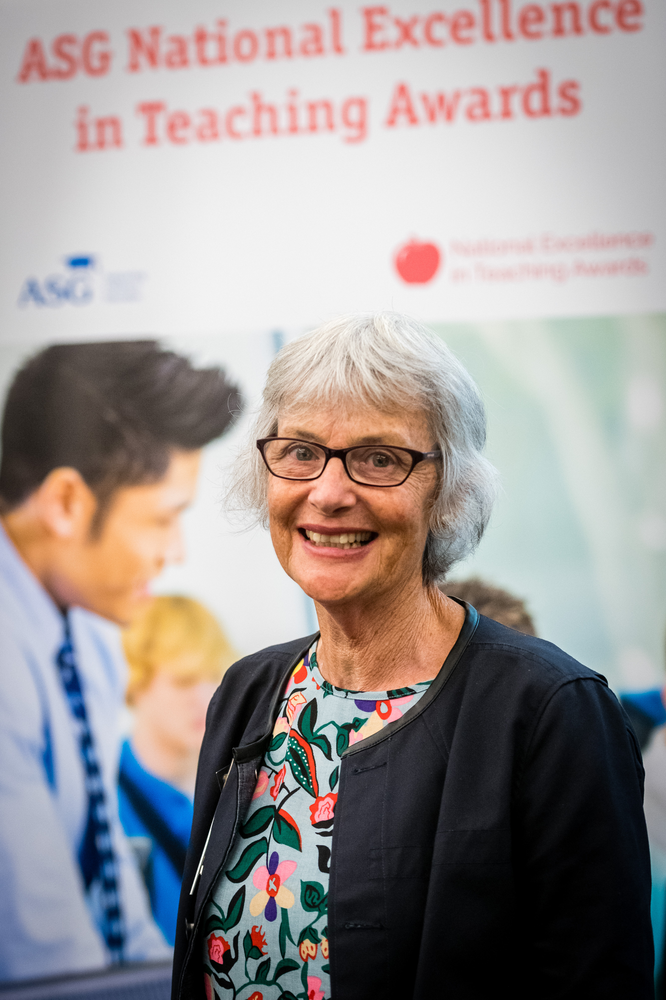
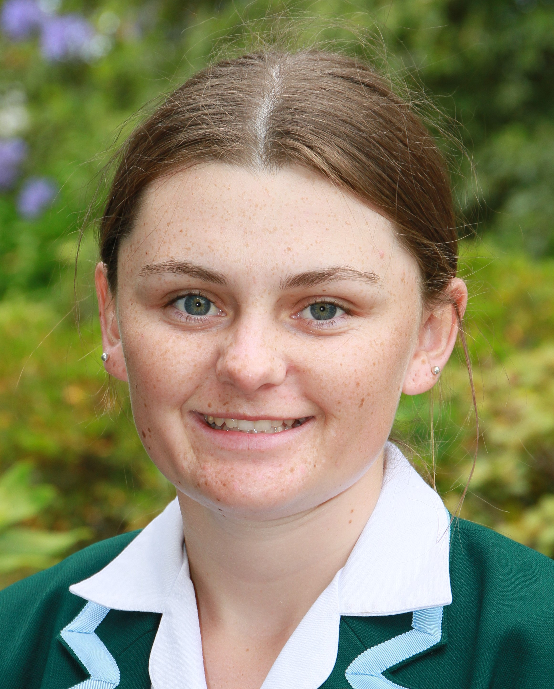

2021 Term Dates:
- TERM 1: 1 February - 16 April
- TERM 2: 3 May - 2 July
- TERM 3: 26 July - 1 Oct
- TERM 4: 18 Oct - 10 Dec
PRINCIPAL’S LETTER
Ms Glenys Parry
 Former Head of Art at Craighead, and much respected friend and colleague, Ms Glenys Parry passed away peacefully on Monday following a lengthy battle with cancer. Glenys was passionate about Art, having studied at the University of Canterbury, majoring in Sculpture, then spending 5 years in Auckland making jewellery from her Auckland studio. She trained as a teacher at the Christchurch College of Education, then spent several years traveling through Africa, the Middle East and Europe. From there, she returned to teaching in Christchurch, eventually moving to teach at Craighead in 1995. Ms Parry was an inspirational teacher - evidenced by the quality of Art produced by her Art students. Over the years, Craighead Art students achieved numerous Scholarships in Painting, Photography and Sculpture. Her students’ folios were often included in the Top Art roadshow, and they achieved many successes in local and regional Art competitions. Through Art, Ms Parry saw young people develop, drawing from their personal background and celebrating their cultural heritage. Ms Parry also believed that embracing visual communication in the digital age was essential and that student development benefitted from a holistic art education. In March 2018, Ms Parry was honoured to receive an ASG National Excellence in Teaching Award (NEiTA), one of six teachers from around New Zealand to take out a $5000 national teaching award. She was so deserving of this award for teaching excellence. What made Ms Parry a great teacher was her passion, her love of Art, her love of Art practice, and her love of creativity. She was kind, caring and collegial. We will miss her. Our thoughts and prayers go out the Parry and Armstrong families, especially her husband Michael and their two sons.
Education Review Office Evaluation Partner
Our ERO evaluation partner Mrs Shelley Wyllie conducted her initial visit on Monday of this week. The purpose of this meeting was to familiarise herself with the school and its context, and to meet the Chair of the Board of Trustees Mr Ant Ford, and the Senior Leadership team. She shared details of the new evaluation approach by the Education Review Office, in that a relationship is developed with the school over a longer time period, rather than an intense review over the space of one week, followed by a report. This time, we will agree upon a specific aspect of our strategic plan upon which to focus our evaluation (likely to be our Year 7-10 Curriculum), which will be adjusted to fit in with resource and time constraints. The next meeting is on the first day of Term 2, when we will identify existing internal evaluation capability in the school and reach agreement about a useful focus and scope for an evaluation based on our existing priorities.
Wanaka Show weekend
 It is fortunate that the Wanaka Show is able to proceed as planned under Alert Level One. We will again have
a presence there in our usual spot this Friday and Saturday as part of our regular marketing and promotions
strategy. We do enjoy meeting up with Old Girls and prospective students and their families. Do pop in and
visit the Craighead tent if you are coming to this fantastic show.
It is fortunate that the Wanaka Show is able to proceed as planned under Alert Level One. We will again have
a presence there in our usual spot this Friday and Saturday as part of our regular marketing and promotions
strategy. We do enjoy meeting up with Old Girls and prospective students and their families. Do pop in and
visit the Craighead tent if you are coming to this fantastic show.
STAFF PROFILE
Dave Hullen

Why do you love teaching?
I enjoy seeing students create what they imagine.What / who inspires you about your teaching subject?
The students' capabilities inspire me.What is your favourite pastime?
Spending time with whānau.A fun fact about you...
I didn't know what PTO in the corner of a piece of paper meant until recently. It still keeps me up at night how much I might have missed out on.
STUDENT LEADER
 Moving to Craighead from a small country school in Year 9 was a shocking and exciting experience. Though I feared that I would get mistaken for a Year 7 because of my height, I was eager to get involved with all the new opportunities that Craighead had to offer. Now, as a Year 13 student who still gets mistaken about my year group due to my height, I am thankful for all the experiences Craighead has given me over the years. These experiences have led me to where I am today and to have the privilege of being Head Boarder for 2021, alongside Pieta Prouting who has supported me right from the start, including one of our biggest Boarding House events, the boarders Weekend-In which was a great success with a lot of memories made. Being in the Boarding House has allowed me to enjoy my sports, make friendships for life and gain important skills that I can carry with me after I leave school. Highlights of my time at Craighead include the many school camps and trips, attending Maadi Cup at Lake Karapiro and making the Hanan Shield Rugby team and involvement with other sporting events and committees within the school and the wider community. These have allowed me to grow as a person and set goals for myself to strive for success. For 2022, I am hoping to further my study at Lincoln University within the Agriculture sector. Being from a family-owned farm and contracting business I have always had an interest in heavy machinery, cropping and livestock. I cannot wait to see what opportunities this year brings, but I will be sure to cherish the memories of my last year at Craighead with my "hostel rangers" by my side.